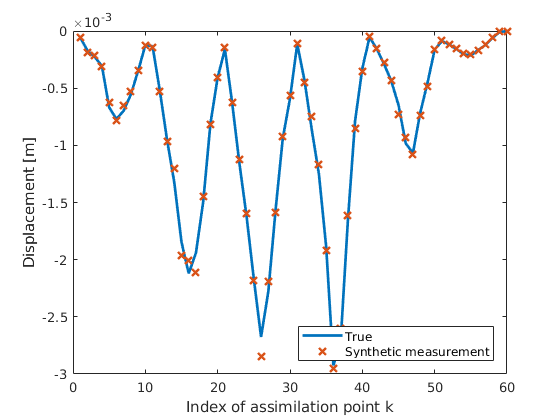

Initiate update for scenario I (homogenous field)
This code initiates the measurement model and the synthetic measurement for scenario I for all the different update methods
Contents
Get prior and proxi model from Example 1.
This task was done in Example 1.
% Define prior distribution with map from germ to parameter and % generate GPC surrogate model p_gpc = 5; [F_cm, upsilon_k_alpha, V_y] = get_prior_and_proxi_from_example_1(p_gpc); % Define the $Q$ parameter(s) Q_1 = SimParameter('Q', F_cm.dist.get_base_dist); % To generalize, let's make it a set of random variables Q = SimParamSet(); Q.add(Q_1); % map from q 2 xi (the identity map) and the inverse q2xi = @(q)q; xi2q = @(xi)xi; % The maps between the scaling factor and Q sig = F_cm.dist.sigma; mu = F_cm.dist.mu; q2f=@(q)exp(binfun(@plus, q*sig, mu)); % And the inverse map f2theta=@(f)(binfun(@minus, log(f), mu)/sig);
Generate synthetic 'truth'
% Specicify the 'true' value of the parameter fcm f_cm_true = 1.89; xi_true = F_cm.param2germ(f_cm_true); q_true = xi2q(xi_true); % Call FEM solver with the artificial 'true' value y_true = call_FEM_solver(f_cm_true); % number of assimilation points n_y = size(y_true, 1);
Generate the synthetic measurement
Define the set of SimParameters for the measurement errors
% standard deviation of the measurements sigma_em = abs(y_true)*0.05; % Set of parameters with the measurement error E_m=generate_stdrn_simparamset(sigma_em); % Fix random seed to have the same measurements for all the methods rand_seed(736) % The synthetic measurement z_m=y_true+E_m.sample(1); % plot the assimilated displacements and the generated measurements h = figure(); plot(y_true, 'LineWidth', 2) hold on plot(z_m, 'x', 'LineWidth', 2) xlabel('Index of assimilation point k') ylabel('Displacement [m]') legend('True', 'Synthetic measurement', 'Location','SouthEast') save_png(h, 'Measurements', 'figdir', 'figs', 'res', 600)
Define the error model which is used for the update
%sigma_e = 2.4*10^-4+ones(n_meas,1); sigma_e = abs(z_m)*0.15; E = generate_stdrn_simparamset(sigma_e); %E = generate_stdrn_simparamset(sigma_em*1.25);